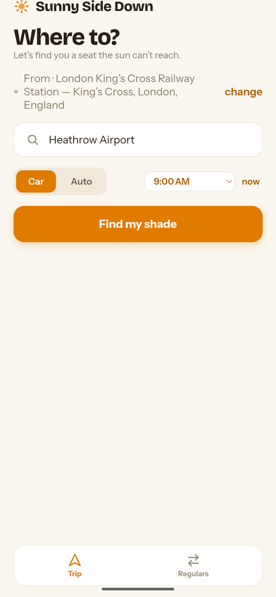
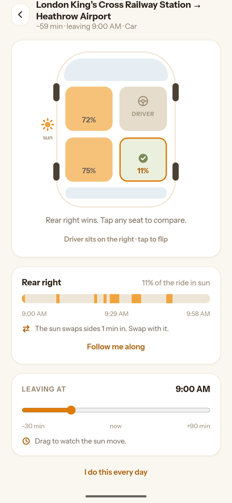
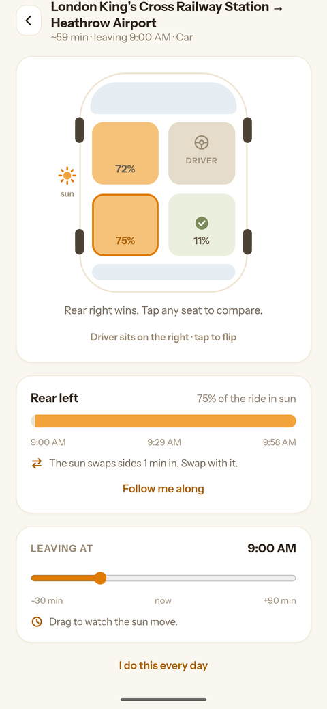

You open the car door, drop in, and the seat has been baking the whole time it waited for you. One side of the car gets that. The other stays shaded. Tell Sunny Side Down where you’re going and it works out which is which — before you pick a door.
Join the testers group → Free, on Android. Testing is open to anyone — ask to join the group above, then opt in on Google Play and install. The group is what makes that second link work.Roads bend, and the sun keeps moving. A seat that’s cool when you set off can be roasting by the time you arrive, so glancing at the sky tells you almost nothing.
Sunny Side Down checks where the sun will be along every stretch of your journey and adds it all up. The answer covers the whole trip, not just the moment you leave.

Tell it where you’re going.

See how much sun each seat gets, and which one wins.

Tap any seat to see exactly when it’s in the sun.
No account, no sign-up, no ads. Your saved journeys stay on your phone — there’s no server of ours for them to sit on. Location is optional: grant it and the app knows where you’re starting from, decline it and you just type a starting point instead.
It’s in closed testing — which means it works, but it’s young, and the group trying it is small. Anyone can ask to join.
If something looks wrong — a verdict that seems backwards, a place it can’t find — tell me and I’ll fix it.